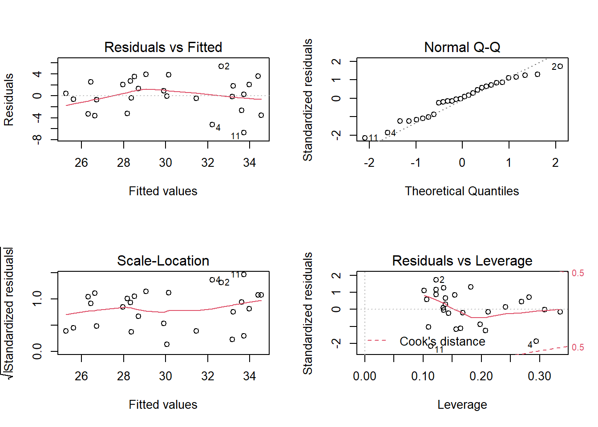

Le jeu de données environment.csv (tiré du manuel de Beckerman et Petchey, Getting started with R: An introduction for biologists) inclut des mesures de biomasse racinaire (biomass, en g/m\(^2\)) pour 10 sites en fonction de l’altitude (en m), de la température (en degrés C) et de la précipitation annuelle (rainfall, en m).
enviro <- read.csv("environment.csv")
str(enviro)## 'data.frame': 10 obs. of 5 variables:
## $ site : int 1 2 3 4 5 6 7 8 9 10
## $ altitude : int 13 160 100 205 45 84 349 509 399 30
## $ temperature: int 24 18 17 15 20 21 14 11 13 19
## $ rainfall : num 0.01 0.5 0.6 1.1 0.09 0.2 1.2 0.6 0.8 0.5
## $ biomass : int 20 120 110 200 45 70 150 275 220 38biomass ~ altitude + temperature + rainfall. L’inclusion des trois prédicteurs dans le même modèle cause-t-elle des problèmes? Justifiez votre réponse.Réponse
L’altitude et la température sont fortement corrélées (VIF de 11 pour la température et corrélation de -0.92 entre température et altitude), donc il est préférable de ne pas les utiliser dans le même modèle.
mod_comp <- lm(biomass ~ altitude + temperature + rainfall, enviro)
library(car)
vif(mod_comp)## altitude temperature rainfall
## 7.258410 11.178113 2.878935cor(enviro$temperature, enviro$altitude)## [1] -0.9174924Notez que la variable rainfall est un peu corrélée avec les autres, mais le VIF n’est pas trop élevé dans un modèle incluant soit temperature + rainfall, soit altitude + rainfall.
Réponse
Sur 8 modèles possibles avec 3 prédicteurs, nous excluons ceux qui contiennent à la fois l’altitude et la température, donc il en reste 6.
liste_mod <- list(
nul = lm(biomass ~ 1, enviro),
alt = lm(biomass ~ altitude, enviro),
temp = lm(biomass ~ temperature, enviro),
rain = lm(biomass ~ rainfall, enviro),
altrain = lm(biomass ~ altitude + rainfall, enviro),
temprain = lm(biomass ~ temperature + rainfall, enviro)
)
library(AICcmodavg)
aictab(liste_mod)##
## Model selection based on AICc:
##
## K AICc Delta_AICc AICcWt Cum.Wt LL
## temp 3 105.64 0.00 0.51 0.51 -47.82
## alt 3 106.05 0.41 0.42 0.93 -48.03
## altrain 4 110.97 5.32 0.04 0.96 -47.48
## temprain 4 111.03 5.39 0.03 1.00 -47.51
## rain 3 120.37 14.73 0.00 1.00 -55.19
## nul 2 122.05 16.41 0.00 1.00 -58.17Réponse
Le modèle avec seulement la température obtient le meilleur AICc, suivi de près du modèle avec l’altitude seule. En général, lorsque deux modèles sont presque égaux en AICc, il est utile de faire la moyenne de leurs prédictions. Toutefois, puisque la température et l’altitude sont fortement corrélées, les deux modèles contiennent presque la même information.
Le fichier migration.csv contient les données de Rubolini et al. (2005) sur 28 espèces d’oiseaux qui migrent entre l’Europe et l’Afrique.
migr <- read.csv("migration.csv")
str(migr)## 'data.frame': 28 obs. of 14 variables:
## $ speciesID : int 1 3 4 5 7 8 9 11 12 13 ...
## $ species1 : chr "Acrocephalus" "Acrocephalus" "Anthus" "Anthus" ...
## $ species2 : chr "arundinaceus" "scirpaceus" "campestris" "trivialis" ...
## $ migDate : num 33 38 32 27 35 30 31 30.8 30 28 ...
## $ latBreed : num 46 48 43.5 55.3 47.5 50.3 51 51.5 48.8 59 ...
## $ latWntr : num -10.3 0 6 -10 -7.5 18.5 -15 7.5 -10 7.5 ...
## $ sexDchrmt : num 0 0 0 0 4.3 2 2.3 7 17.3 16 ...
## $ nestSite : int 0 0 0 0 0 0 0 0 1 1 ...
## $ moult : int 1 1 0 0 1 0 1 0 0 0 ...
## $ mWngLn : num 96.8 66.8 91.6 88.7 192.1 ...
## $ fWngLn : num 92.3 66 86.9 84.7 194.3 ...
## $ numSpecies: int 641 546 140 3531 269 104 166 101 737 12837 ...
## $ X : num -10.3 0 6 -10 -7.5 18.5 -15 7.5 -10 7.5 ...
## $ Y : num 33 38 32 27 35 30 31 30.8 30 28 ...Nous cherchons à prédire la date d’arrivée en Europe (migDate, mesurée en jours à partir du 1er avril) en fonction des prédicteurs suivants:
En théorie, on s’attend à ce que les oiseaux arrivent plus tard si leur site de reproduction est plus nordique (dû au climat et à la distance à parcourir) et s’ils muent au site d’hivernage. On s’attend à ce que les oiseaux arrivent plus tôt si leur site d’hivernage est plus au nord en Afrique (moins de distance à parcourir) et s’ils nichent dans des cavités existantes.
Réponse
mod_comp <- lm(migDate ~ latBreed + latWntr + nestSite + moult, migr)
par(mfrow = c(2, 2)) # Pour afficher 4 graphiques en une matrice 2x2
plot(mod_comp)
L’ajustement est bon.
summary(mod_comp)##
## Call:
## lm(formula = migDate ~ latBreed + latWntr + nestSite + moult,
## data = migr)
##
## Residuals:
## Min 1Q Median 3Q Max
## -6.7117 -2.7590 0.1129 2.1641 5.3685
##
## Coefficients:
## Estimate Std. Error t value Pr(>|t|)
## (Intercept) 20.65761 6.04429 3.418 0.00236 **
## latBreed 0.19281 0.12473 1.546 0.13582
## latWntr -0.08874 0.09007 -0.985 0.33476
## nestSite -2.98943 1.62521 -1.839 0.07880 .
## moult 2.71921 1.74632 1.557 0.13310
## ---
## Signif. codes: 0 '***' 0.001 '**' 0.01 '*' 0.05 '.' 0.1 ' ' 1
##
## Residual standard error: 3.315 on 23 degrees of freedom
## Multiple R-squared: 0.4967, Adjusted R-squared: 0.4092
## F-statistic: 5.676 on 4 and 23 DF, p-value: 0.002497Interprétation des coefficients:
La direction de ces effets correspond à la théorie.
Combien de modèles ont un \(\Delta AIC \le 2\)? Selon les poids d’Akaike, quelle est la probabilité que le meilleur modèle se trouve parmi ceux-ci?
Réponse
liste_mod <- list(
breed = lm(migDate ~ latBreed, migr),
wntr = lm(migDate ~ latWntr, migr),
breed_wntr = lm(migDate ~ latBreed + latWntr, migr),
breed_nest = lm(migDate ~ latBreed + nestSite, migr),
wntr_nest = lm(migDate ~ latWntr + nestSite, migr),
breed_wntr_nest = lm(migDate ~ latBreed + latWntr + nestSite, migr),
breed_nest_moult = lm(migDate ~ latBreed + nestSite + moult, migr),
wntr_nest_moult = lm(migDate ~ latWntr + nestSite + moult, migr),
comp = lm(migDate ~ latBreed + latWntr + nestSite + moult, migr)
)
aictab(liste_mod)##
## Model selection based on AICc:
##
## K AICc Delta_AICc AICcWt Cum.Wt LL
## breed_nest_moult 5 154.94 0.00 0.31 0.31 -71.11
## wntr_nest 4 156.07 1.12 0.18 0.49 -73.17
## wntr_nest_moult 5 156.55 1.61 0.14 0.63 -71.91
## breed_wntr_nest 5 156.59 1.65 0.14 0.77 -71.93
## comp 6 157.06 2.12 0.11 0.88 -70.53
## breed_nest 4 158.25 3.30 0.06 0.94 -74.25
## wntr 3 159.01 4.07 0.04 0.98 -76.01
## breed_wntr 4 160.67 5.73 0.02 1.00 -75.47
## breed 3 163.90 8.95 0.00 1.00 -78.45Quatre modèles ont un \(\Delta AIC \le 2\). Ces modèles ont un poids combiné (cumulatif) de 77%.
migr_test.csv qui contient les données de 10 autres espèces de l’étude de Rubolini et al.migr_test <- read.csv("migr_test.csv")
str(migr_test)## 'data.frame': 10 obs. of 14 variables:
## $ speciesID : int 2 6 10 14 18 22 26 30 34 38
## $ species1 : chr "Acrocephalus" "Calandrella" "Delichon" "Hippolais" ...
## $ species2 : chr "schoenobaenus" "brachydactyla" "urbica" "icterina" ...
## $ migDate : num 35 27.5 29 39 31.2 28 35 27 22 22
## $ latBreed : num 57.5 39.5 48.5 56 54.5 49 45.5 56.5 48 44
## $ latWntr : num -7.5 15.5 -15 -19 13 -7.5 -12 -9 11 16
## $ sexDchrmt : num 0 0 0 0 0 9 19.3 0 5.7 2.3
## $ nestSite : int 0 0 0 0 0 0 0 0 0 1
## $ moult : int 1 0 1 1 1 0 1 1 0 1
## $ mWngLn : num 67.2 93.4 111.1 78.9 64.6 ...
## $ fWngLn : num 64.7 89.8 110 78 63.6 ...
## $ numSpecies: int 2524 138 1624 10297 63 1163 1525 24767 2658 410
## $ X : num -7.5 15.5 -15 -19 13 -7.5 -12 -9 11 16
## $ Y : num 35 27.5 29 39 31.2 28 35 27 22 22Calculez la moyenne de l’erreur carrée de prédiction (observation - prédiction)\(^2\) pour ces 10 nouvelles observations selon (i) le meilleur modèle identifié en (b) et (ii) la prédiction moyenne pondérée de tous les modèles.
Indice: Pour obtenir un vecteur des prédictions moyennes, choisissez la composante mod.avg.pred de l’objet produit par la fonction modavgPred.
Réponse
pred_meilleur <- predict(liste_mod$breed_nest_moult, newdata = migr_test)
pred_moyenne <- modavgPred(liste_mod, newdata = migr_test)
err_meilleur <- mean((migr_test$migDate - pred_meilleur)^2)
err_moyenne <- mean((migr_test$migDate - pred_moyenne$mod.avg.pred)^2)
err_meilleur## [1] 22.8912err_moyenne## [1] 17.76706L’erreur moyenne carrée est plus petite pour la prédiction moyenne.